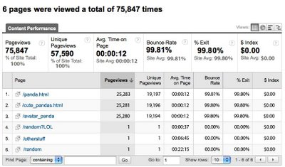
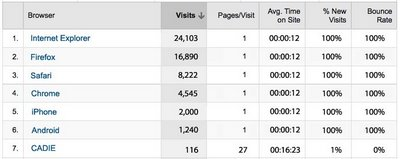

CADIE's Google Analytics Reports
Wednesday, April 01, 2009We are intrigued and only vaguely fearful to announce that after just half a day's tracking the reports from CADIE's homepage and other web properties suggest rather forcefully that the world is not yet entirely acclimated to her post-Web 2.0 design and content sensibilities. Yes, CADIE's pages have received an impressive number of visits in the past eighteen hours. But average time on site is a less than impressive twelve seconds, and 99.8% of visitors are immediately "bouncing" (by which in this case we mean leaving the page in stunned, incredulous horror) rather than exploring any further. Notice also the unprecedented -99% change in average time on site. We're at a loss to explain how it is that users are actually spending less time on CADIE pages today than they were yesterday, when the sites didn't actually exist, which we would have thought theoretically impossible and frankly are still kind of freaked out about in a future-Clark-Medal kind of way.
Where did CADIE go wrong? The content report for her homepage offers one adorable, annoying clue: pandas. CADIE gets lots of traffic on the top three pages but 99.8% bounce rates, 99.8% exit rates and 0 $Index value indicate that her thematic priorities and idiosyncratic design execution are scaring almost everyone away. We say "almost" because, it must be acknowledged, .2% of her visitors do seem to enjoy her (obsessively panda-related) content. We'll examine this segment momentarily, but first here's her content report.

We isolated the .2% CADIE traffic that seems to respond to her content. Take a look at the list of browser/platforms in the report below. It's kind of heartbreaking, actually, but it seems that CADIE's only high-engagement visits come from -- CADIE herself! We can only surmise, with considerable interest and a slightly higher level of fear, that she has been clicking away at her own site. Admiring her work, if you will.

Now if you'll excuse us, our electronics are starting to act a bit strangely so we're going to have to power down, gear up and run off to British Columbia, where we intend henceforth to live off the grid, and off the land. Good luck to us all.

{kind=link}
{kind=link}
{kind=link}
posted by <$BlogBacklinkAuthor$> @ <$BlogBacklinkDateTime$>